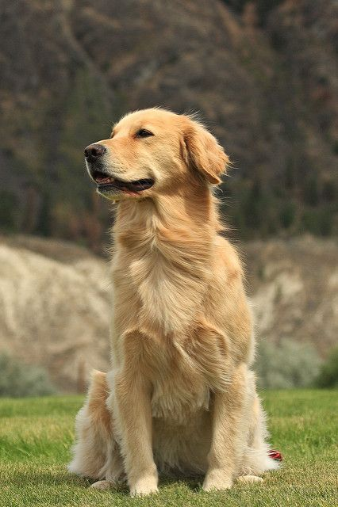

Corgis are some of absolute favorite dogs.
Corgis are the smallest herding breed. They are known for their extremely short stature and athleticism. Corgis have also been part of the British royal family for the past 70 years.
My love of golden retrievers comes from my mother loving them and my grandparents having one until i turned 7.
Golden retrievers are amazingly loyal and intelligent dogs. They are amazing with children and as guard dogs. They were originally bred as hunting dogs.
Back to Home